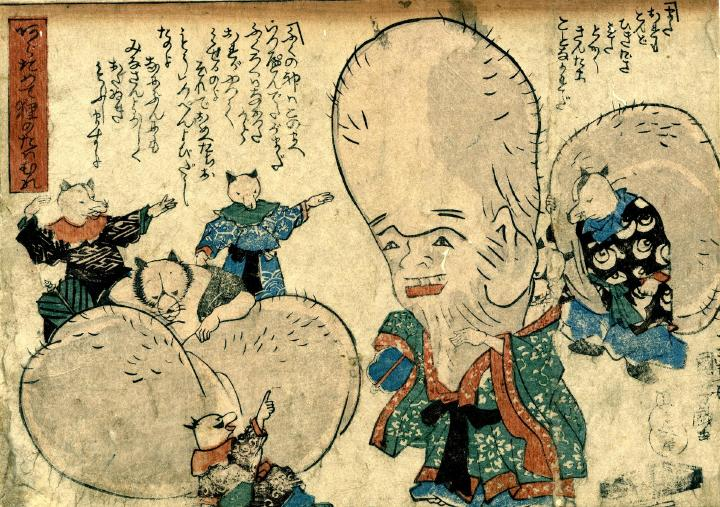

狸たちが七福神の真似をして遊んでいる。1体は陰嚢を垂直に立てて顔を書き、福禄寿の真似。もう1体は陰嚢を担ぎ大黒天。最後は陰嚢を袋状にして布袋の真似である。
著作者：一勇斎国芳／出典：親書誌：U426_nichibunken_0253： [三井寺の弁慶] と[三福神]；ミイデラノベンケイトサンプクジン／日付：2011／資源識別子：U426_nichibunken_0253_0002_0000
Copyright (c)2010- International Research Center for Japanese Studies, Kyoto, Japan. All rights reserved.